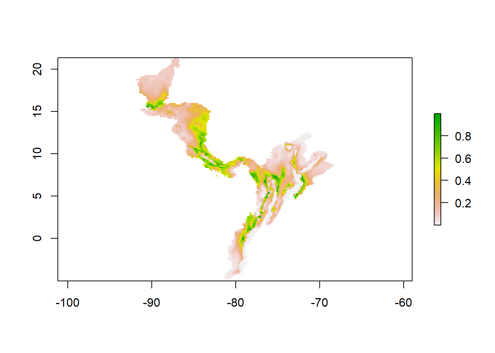

12 Bayesian model: adding tolerance limits
This tutorial shows how to use the Bayesian model with tolerance limits to create estimates for the fundamental niche of a species. Various functions are necessary for this process that are within the file Nf_Model_functions.R: priorpar, DefineSp, Supp, Initth, PlotXYEnvVars, PlotIterations, and save.all. Out of these, Supp, Initth, and PlotXYEnvVars are directly used within other functions. Other functions (Energy and Run) are used directly in the example as they need to be adjusted based on the example and estimation results.
12.1 How the main functions work
The function DefineSp fixes the values for species and environmental variables that are worked with. The fixed values are Comp1 and Comp2 (providing columns), env.d (a matrix with environmental information of randomly sampled locations of a study area), env.sp (a matrix with environmental information of the presence points of a species), n (number of occurrences), m (number of randomly sampled points), N (total amount of data points, including occurrences and sample), Et (a matrix with the combined environmental information of occurrences and samples).
DefineSp(env, data.sp, Comp1, Comp2)The function priorpar uses data of environmental tolerance limits (maximum and minimum) of a species to determine the values of the parameters that define the a priori distribution.
priorpar(tolran, nsd, alpha)The functions Supp and Initth are essential for using the t-walk algorithm. Alongside PlotXYEnvVars, these functions are used later in the simulations.
The function PlotIterations is used after calculating MCMC. It will plot a selection (indices) of the MCMC iterations.
PlotIterations(info, from, thin, lev,...)The function save.all saves all the values of mu and Sigma simulated from the posterior.
save.all(info, from, thin, filename)12.1.1 Parameters
env= random sample of points inside a study area that contain environmental informationdata.sp= a matrix that contains the occurrence points of a species and correlated environmental dataComp1= two numbers that define the column number which contains the first environmental condition of a matrixComp2= two numbers that define the column number which contains the second environmental condition of a matrixtolran= a matrix that contains the minimum and maximum values of the tolerance limits of a species (two columns for min and max and as many rows as environmental variables are used)nsd= number of standard deviations covered by a tolerance rangealpha= number of degrees of freedom in the a priori Wishart distributionth= a vector of five elements (first two are values of mu, 3,4, and 5 are values of A)…= with this parameter, further graphical parameters can be supplied as arguments to the plotinfo= a list of iterations calculated with theRtwalkfunction (MCMC)from= gives the start iterationthin= the separation between iterations
12.1.2 Input and Output
The files that need to be prepared to run these functions are: a matrix that contains tolerance limits of environmental conditions that a species can survive in, a matrix that contains the occurrence points of a species and correlated environmental data, and a matrix that contains a random sample of points inside a study area that are correlated with environmental information. The information on the tolerance limits of a species needs to be obtained through lab experiments. The two other files can be created by using the function get.Ecoord (see tutorial “Getting environmental values for the study sites”).
The output are several graphs that show the tolerance limits within the environmental space as well as the iterations from the MCMC algorithm. Furthermore, a matrix with the calculated iterations will be created.
12.1.3 Dependencies
Functions: Rtwalk
Example: rgdal, `raster``
12.2 Worked Example: Threnetes ruckeri
12.2.1 Read source codes and libraries
source(".\\Functions\\Nf_Model_functions.R")library(Rtwalk)Input files
Threnetes_ruckeri_occ_GE.csv
Threnetes_ruckeri_M_GE.csv
T_ruckeri_tolerances.csv
12.2.2 Main code
Read files and prepare the parameters
# Read random sampled points with GE information and occurrences with GE information
envall <- read.csv("./Generated_Data/Threnetes_ruckeri_M_GE.csv",header=T)
data <- read.csv("./Generated_Data/Threnetes_ruckeri_occ_GE.csv",header=T)
# Read matrix with tolerance ranges for two environmental conditions of the species
limits <- read.csv("./Initial_Data/T_ruckeri_tolerances.csv")
# Specify species name
rotule <- "Threnetes_ruckeri"
# select species color for plots
spcol <- "royalblue3"Fixing the species and environmental variables with the function DefineSp. The numbers in Comp1 and Comp2 are the numbers of the columns in the loaded matrices that contain the environmental information. After calling the function, the values Comp1, Comp2, env.d, env.sp, n, m, N, Et are fixed for further use.
DefineSp( env = envall, data.sp = data, Comp1=c(3,3), Comp2=c(4,4))n # number of occurrences## [1] 171head(env.sp, n=4) # environmental information of occurrence points## bio1 bio12
## [1,] 241 3039
## [2,] 255 4036
## [3,] 263 2876
## [4,] 257 4018m # ## [1] 599head(env.d, n=4) # environmental information of randomly sampled points## bio1 bio12
## [1,] 263 2588
## [2,] 256 4614
## [3,] 239 586
## [4,] 242 2450N # number of randomly sampled points## [1] 770head(Et, n=4) # combined environmental information of occurrences and samples## bio1 bio12
## [1,] 263 2588
## [2,] 256 4614
## [3,] 239 586
## [4,] 242 2450tail(Et, n=4)## bio1 bio12
## [767,] 207 3575
## [768,] 248 2918
## [769,] 254 2261
## [770,] 257 4018Define a valid interval for mu, depending on the range of the environmental variables. These limits are used for the plots as well as for the function Supp.
b1 <- 10
b2 <- 100
mu.lim <<- c(min(Et[,1],limits[1,2])-b1,max(Et[,1],limits[1,3])+b1,
min(Et[,2],limits[2,2])-b2,max(Et[,2],limits[2,3])+b2)Apply the function priorpar to calculate a priori parameters with the tolerance limits.
# number of d.f. in the a priori Wishart distribution
alpha0 <<- 2
# Apply function
priorpar(limits[,2:3], nsd=6, alpha=alpha0)
# a priori mean
mu0## [1] 250 2750# precision matrix
(A0 <<- chol2inv(CholSigma0)) ## [,1] [,2]
## [1,] 0.0036 0.000000e+00
## [2,] 0.0000 1.777778e-06# scale matrix
(W0 <<- chol2inv(CholW)) ## [,1] [,2]
## [1,] 138.8889 0
## [2,] 0.0000 281250# covariance matrix
(Sigma0 <<- t(CholSigma0) %*% CholSigma0)## [,1] [,2]
## [1,] 277.7778 0
## [2,] 0.0000 562500Plot the the a priori parameters as an ellipse and the tolerance limits as a rectangle in the environmental space.
# create an ellipse with a 95% confidence region (=lev)
el <- ellipse::ellipse(x = Sigma0, centre = mu0,level = 0.95)
# x11()
# Plot background points
plot(env.d, pch=1, col= "grey80", xlim=mu.lim[1:2], ylim=mu.lim[3:4],
xlab="Mean Annual Temperature (°C *10)",
ylab="Total Annual Precipitation (mm)",main="Environmental space")
# add occurrences
points(env.sp, pch=19, col=spcol)
# add tolerance limits
rect(xleft = limits[1,2], xright= limits[1,3], ybottom = limits[2,2],
ytop = limits[2,3], border="gold", lwd=2)
# add ellipse corresponding to the selected confidence region
lines(el,col="gold",lwd=2)
legend("topleft",legend=c(rotule, "Species presences", "Points inside M", "Tolerance ranges"),pch=c(NA,19,1,NA),
bty="n",lty=c(0,0,0,1),col=c("white", spcol, "grey80", "gold"),lwd=2)
Figure 2.3: Figure of the suitable niches constructed by a priori parameters in the environmental space for the species Threnetes ruckeri .
The next step is to calculate the Markov Chain Monte Carlocreate for the Bayesian model with the function Energy. It creates a negative logarithm of the posterior function of the parameters of interest.
This function needs to be adjusted based on the datasets and the resulting estimations. The previously defined variables are necessary for these calculations. Another variable that is needed is the number of environmental variables in the study. In this case we have two (bio1 and bio12).
dd <- 2Apply the function Engery and adjust accordingly.
# This is called right after Supp: mu, A and detA are already defined, th is ignored
Energy <- function(th)
{
ax1 <- (mu - mu0)
ax2 <- apply( env.sp, 1, function(xi) { ax<-as.matrix(xi - mu); t(ax) %*% A %*% ax })
# first two terms are generic in the posterior due to the normal model
S <- 0.5*sum(ax2) + n*log(suma.Et)
# these terms correspond to the priors:
S <- S + 0.5*( t(ax1) %*% A0 %*% ax1 + sum(diag(A %*% W0)) - (alpha0-dd-1)*log(detA) )
S
}The next step is to run the MCMC simulation of the posterior with the output of Energy. 1000 iterations would be quite fast but it is better to use at least 10000 or 20000. The resulting values in the beginning are quite large and not of interest. The main focus should be on smaller iterations.
# number of iterations
niter <- 10000
# draw the iterations in as many plots as dimensions where entered for Run (in this case: 5)
info <- Runtwalk( Tr=niter, dim=5, Obj=Energy, Supp=Supp, x0=Initth(), xp0=Initth())## This is the twalk for R.
## Evaluating the objective density at initial values.
## Opening 12 X 10001 matrix to save output. Sampling, check graphics divice.str(info)## List of 8
## $ dim : num 5
## $ Tr : num 10000
## $ acc : num 1227
## $ Us : num [1:10001] 2048 2048 2048 2048 2048 ...
## $ Ups : num [1:10001] 2048 2048 2048 2048 2048 ...
## $ output : num [1:10001, 1:5] 259 259 259 259 259 ...
## $ outputp: num [1:10001, 1:5] 269 269 269 269 269 ...
## $ recacc : num [1:10000, 1:2] 2 1 2 1 1 1 1 1 2 2 ...Plot the results to check the MCMC convergence. The resulting values in the beginning are usually quite large and not of interest. Smaller iterations are of interest. Adjust the line depending on how the iterations turn out to catch the smaller iterations.
# define a parameter for the number at which a line is drawn and used as a
# lower limit for the plot iterations
marker <- 2000
# x11()
plot(1:(niter+1), -info$Ups, type = "l", xlab = "iteration", ylab = "LogPost",
main = "dim=5")
abline(v=marker, col="red")Figure 6.2: Figure of the Bayesian iterations for the species Threnetes ruckeri marked with the lower limit.
Save the results as a csv-file. From defines from which iteration the output is saved and thin defines the steps in between the iterations.
fname <- paste0(paste(rotule,niter,"output",sep="_"),".csv")
save.all(info,from = marker, thin = 400, paste0("./Generated_Data/",fname))Since the MCMC calculation simulates values of a distribution, for each simulation an ellipse can be drawn. The blue ellipse is supposed to present the best estimation for the niche of a species. However, this might not always be true and is quite dependend on the amount of iterations used.
# Plot simulated ellipses
# x11()
PlotIterations(info, from=marker, thin=400,col=spcol,
main=paste(rotule, niter, sep="_"),
xlim=mu.lim[1:2], ylim=mu.lim[3:4])
# a priori ellipse
lines(el,col="gold",lwd=2)
Figure 10.2: Figure of the suitable niches constructed by the MCMC iterations in the environmental space for the species Threnetes ruckeri .
Save the values mu and Sigma into a csv-file for further use. Estimated parameters = MAPs
# Define mu and Sigma
mu## [,1]
## [1,] 228.079
## [2,] 3969.181chol2inv(chol(A))## [,1] [,2]
## [1,] 1101.323 -2423.676
## [2,] -2423.676 1851053.170# save the estimated parameters for further use as a matrix (csv)
mat <- cbind(mu, chol2inv(chol(A)))
colnames(mat) <- c("mu", "Sigma1", "Sigma2")
write.csv(mat,"./Generated_Data/tr_bay_mu_sigma_estimates.csv",row.names = F)Output files
Threnetes_ruckeri_10000_output.csv
tr_bay_mu_sigma_estimates.csv
12.3 Using the Bayesian model for the projection into G-Space
12.3.1 Read source and libraries
source(".\\Functions\\nicheG.R")library(rgdal)
library(raster)Input files
bio1.asc
bio12.asc
Threnetes_ruckeri.shp (and associated files)
Read rasters with environmental information and stack them.
bio1 <- raster(".\\Initial_Data\\bio1.asc")
bio2 <- raster(".\\Initial_Data\\bio12.asc")
bios <- stack(bio1,bio2)Apply the function Niche.G to create a raster with a suitability index based on the Bayesian model.
thr.bay <- niche.G(Estck = bios, mu = mu, Sigma = chol2inv(chol(A)))The new raster can be either saved like this or be sized to the study area. For further application a cropped raster is necessary. Read a shapefile that defines the study area, crop the raster with it and save the result.
thr.shp <- readOGR("./Initial_Data/shapefiles","Threnetes_ruckeri")
thr.bayc <- mask(crop(thr.bay, thr.shp), thr.shp)writeRaster(thr.bayc,"./Generated_Data/tr_bay_cropped.tif", overwrite = T)Plot of the suitability index of the Bayesian model.
plot(thr.bayc)
Output files
- tr_bay_cropped.tif